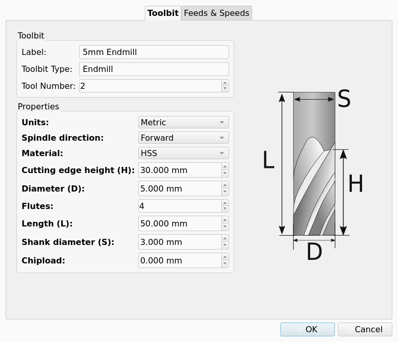
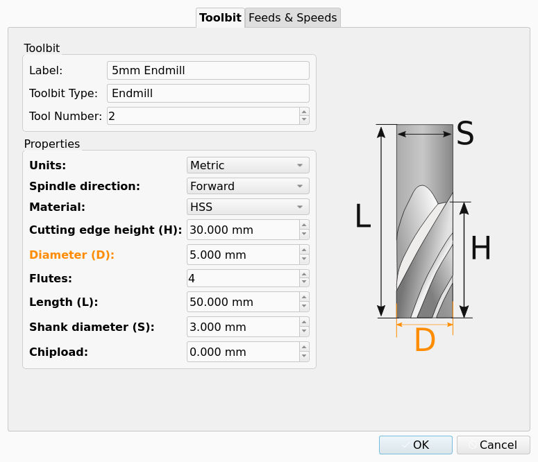
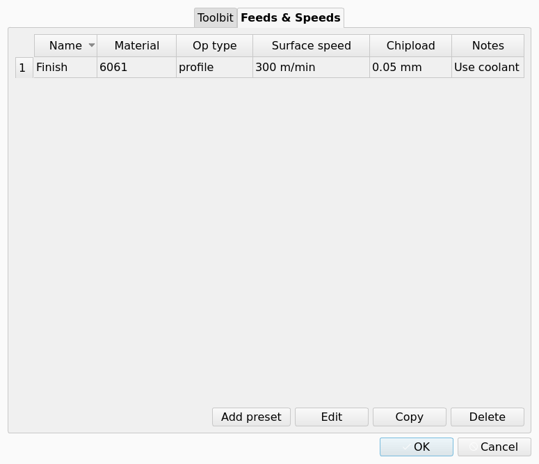
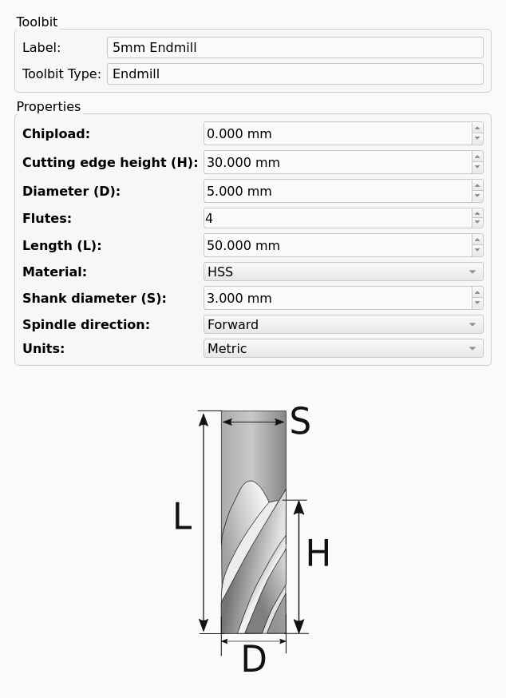
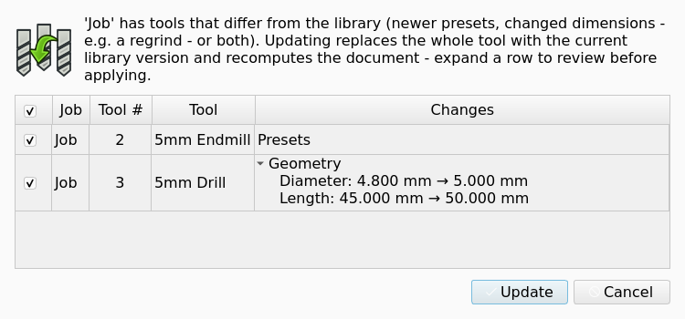

CAM ToolBit
Description
Toolbits are the foundation of the CAM Tools system. They represent a specific tool that can be used in a CAM Job to generate a Toolpath. Each Tool Bit is stored as a JSON file. JSON is structured data that can be easily parsed by macros or python scripts but remains human readable. Describing Tool Bits with JSON allows for the possibility of automatically creating large collections of accurate Tool Bits with a script.
Storing a tool as a JSON file sounds great but eliminates the option of an accurate thumbnail or solid body representation. On the other hand, if each Tool Bit were created as a FreeCAD object, obtaining the solid body would be simple but would require enormous storage for large tool collections. Also automatically creating Tool Bits as FreeCAD objects would be difficult or impossible.
Instead, the Tool Bit is a hybrid. The JSON file names the Tool Shape by its ID (for example endmill.fcstd, looked up in the Tools/Shape folder of the asset directory or the shipped shapes) and stores the values of the shape parameters and attributes.
When a Tool Bit is added to a Job, the Tool Shape body is copied into the document (hidden, property BitBody) and its solid is assigned to the Tool Bit object. Changing a parameter in the Shape group of the Tool Bit updates the solid after the next recompute. This provides the correct shape and dimensions which can be used to generate a point cloud or mesh for advanced algorithms (and potentially simulation).
Usage
Within the FreeCAD GUI the Library Manager provides a mechanism to create a new Tool Bit. A single Tool Bit can exist in multiple Tool Libraries.
-
Select .
-
Select a library (or All Toolbits).
-
Press the Adds a toolbit button and pick a Tool Shape in the Toolbit Shape Selection dialog.
-
In the Toolbit Parameter Editor set the Label, Tool Number (only when a library is selected; the next free number is proposed), the Toolbit Type (editable only for shapes with subtypes, for example Drill: jobber, stub, spot, center, brad point), the shape parameters and the attributes, then press OK.
-
To edit an existing Tool Bit, double-click it in the Library Manager or in the Toolbit Selector, or select it and press F2.
Toolbit Parameter Editor
The editor (window title Toolbit Parameter Editor) has two tabs:
-
Toolbit: Label, Toolbit Type, optional Tool Number, a Properties list (Shape and Attributes groups) with the abbreviations used in the shape drawing shown next to each parameter, and the shape drawing.
-
Feeds && Speeds introduced in 26.3: a table of the presets stored on the Tool Bit with Add preset, Edit, Copy and Delete buttons; see CAM FeedsSpeeds.
A Notes tab exists in the dialog definition but is hidden.
While the Toolbit Parameter Editor is open, the FreeCAD unit schema is temporarily switched to the Tool Bit’s Units setting so that parameters are entered in the tool’s native units; the previous schema is restored when the editor closes.
Tool Bit
Overview
A Tool Bit holds the geometry, the dimensions and the attributes of the item that cuts the Stock. A Job uses a Tool Bit through a Tool Controller. An Operation reads the Tool Bit of its Tool Controller to calculate a Toolpath.
The CAM workbench stores each Tool Bit as a JSON file with the extension .fctb.
A macro or a Python script can read and write this file.
One Tool Bit can be a member of more than one Tool Library.
Tools gives the relation between Tool Bit, Tool Library and Tool Controller.
The Tool Bit file names its Tool Shape by the ID of the Tool Shape, for example endmill.fcstd.
The Tool Bit file also stores the values of the shape parameters and the attributes.
The CAM workbench finds the Tool Shape in the Tools/Shape folder of the asset directory or in the shapes that FreeCAD supplies.
Tool Shape lists the shapes and their parameters.
When you add a Tool Bit to a Job, the CAM workbench copies the body of the Tool Shape into the document. The copied body is hidden, and the Bit Body property of the Tool Bit links to it. The Tool Bit object receives the solid of this body. When you change a property in the Shape group, the next recompute updates the solid.
The solid has the correct shape and dimensions of the Tool Bit. An algorithm can use the solid to make a point cloud or a mesh.
Tool Bit editor
The Toolbit Parameter Editor dialog shows and changes the values of one Tool Bit. The dialog opens from these locations:
-
The Toolbit Library Manager opens the dialog when you add a Tool Bit. See Toolbit Library Manager.
-
A double-click on a Tool Bit in the Toolbit Library Manager or in the Toolbit Selector opens the dialog.
-
F2 opens the dialog for the Tool Bit that is selected in one of these two lists.
The dialog has two tabs, Toolbit and Feeds & Speeds. The dialog definition also contains a Notes tab, and the editor hides this tab.
Toolbit
-
Label: the name of the Tool Bit in the interface.
-
Toolbit Type: the subtype of the Tool Shape. You can change the value only for a Tool Shape that has subtypes. For example, the
Drillshape has the subtypes jobber, stub, spot, center and brad point. -
Tool Number: the number of the Tool Bit in the Tool Library. The field is shown only when a Tool Library is selected. For a new Tool Bit, the editor gives the next free number.
-
Properties: one field for each property of the Shape group and the Attributes group. The label of a shape parameter shows the abbreviation that the shape drawing uses for this parameter.
-
Shape drawing: the drawing of the Tool Shape with its dimensions. See Tool Shape.
The figure shows the Toolbit tab for a Tool Bit with the Endmill shape.

introduced in 26.3: The Properties list does not show a derived property.
The CAM workbench calculates a derived property from the other shape parameters.
See Properties for the derived property of the Chamfer shape.
introduced in 26.3: The shape drawing and the Properties list are connected:
-
Move the pointer on a dimension in the shape drawing. The editor highlights the dimension and the field of its property.
-
Move the pointer on the row of a property. The editor highlights the dimension of this property in the shape drawing.
-
Click a dimension in the shape drawing. The field of its property gets the keyboard focus, and the editor selects the content of the field.
The figure shows the Toolbit tab with the pointer on the D dimension.

While the editor is open, the unit schema of FreeCAD is the schema of the Units value of the Tool Bit. Thus you enter each parameter in the unit system of the Tool Bit. When the editor closes, the editor sets the unit schema that was active before.
introduced in 26.3: The fields show a Metric value with 3 decimals and an Imperial value with 4 decimals.
The decimals preference of FreeCAD does not change the precision of these fields.
Feeds & Speeds
introduced in 26.3: The Feeds & Speeds tab shows a table of the Presets that the Tool Bit stores. The tab has the buttons Add preset, Edit, Copy and Delete. A Preset has a name, and a Preset can have a note. The figure shows the tab with one Preset.

See Feeds and Speeds for the Presets and their use.
Properties
Shape ID
BaseShapeID
String, read-only): the ID of the Tool Shape, a.fcstdfile name.Shape Type
Shape (.fcstd).ShapeType (
Enumeration, read-only): the shape class. Values:Endmill,Ballend,Bullnose,Chamfer,Drill,VBit,Dovetail,Reamer,SlittingSaw,Tap,ThreadMill,Probe,TaperedBallNose,Radius,Custom.Tool Bit ID
class (Endmill, Ballend, Bullnose, Chamfer, Drill, VBit, Dovetail, Reamer, SlittingSaw, Tap, ThreadMill, Probe, TaperedBallNose, Radius, Custom).ToolBitID (
String, read-only): the unique ID of the Tool Bit. The ID is the file name of the Tool Bit in the library.Bit Body
Bit (its file name in the library).BitBody (
Link, hidden): the body that the shape parameters control.
One property per parameter of the Tool Shape, for example Diameter, Length, CuttingEdgeHeight, ShankDiameter, Flutes. See CAM ToolShape for the list per shape.
-
Units (
Enumeration: Metric, Imperial) introduced in 26.3: unit system used to display the Tool Bit’s parameters. -
SpindleDirection (
Enumeration: Forward, Reverse, None): default spindle direction; copied to the Tool Controller when the Tool Bit is added to a Job. Probes never rotate. -
Material (
Enumeration: HSS, Carbide): tool material; used by the Feeds and Speeds helper to pick the matching surface speed of the Stock material. -
Chipload (
Length, cutting tools only): default chipload per tooth, used as a low-confidence fallback by the Feeds and Speeds helper.
-
Presets (
String, only present once a preset was saved) introduced in 26.3: JSON list of Feeds & Speeds presets.
JSON Structure
introduced in 26.3: a ToolBit can define a Units parameter: Metric or Imperial. The ToolBit editor uses it for native-unit display; CAM calculations still use metric units internally. Changing the unit schema may cause small rounding differences.
-
One property for each parameter of the Tool Shape, for example Diameter, Length, Cutting Edge Height, Shank Diameter and Flutes. See Tool Shape for the parameters of each shape.
-
introduced in 26.3 Diameter of the
Chamfershape (read-only): a derived property. The value isTipDiameter + 2 * CuttingEdgeHeight * tan(CuttingEdgeAngle / 2).
-
introduced in 26.3 Units (
Enumeration): the unit system of the Tool Bit. The Tool Bit editor and the Tool Bit file use this unit system. Values:Metric,Imperial. -
Spindle Direction (
Enumeration): the default direction of the spindle. The Tool Controller receives this value when you add the Tool Bit to a Job. A Tool Bit with theProbeshape does not turn. Values:Forward,Reverse,None. -
Material (
Enumeration): the material of the Tool Bit. The Feeds and Speeds helper uses the value to select the applicable surface speed of the Stock material. Values:HSS,Carbide. -
Chipload (
Length): the default chipload for each tooth. Only a Tool Bit that cuts has this property. The Feeds and Speeds helper uses the value as a fallback of low confidence.
-
introduced in 26.3 Presets (
String): a JSON list of the Presets. The Tool Bit has this property only after you save a Preset.
File format
A Tool Bit file is a JSON file with the extension .fctb.
{
"version": 2,
"id": "5mm_Endmill",
"name": "5mm Endmill",
"shape": "endmill.fcstd",
"shape-type": "Endmill",
"parameter": {
"Chipload": "0.0500 mm",
"CuttingEdgeHeight": "30.000 mm",
"Diameter": "5.000 "0.0000 mm",
"CuttingEdgeHeight": "30.0000 mm",
"Diameter": "5.0000 mm",
"Flutes": 2,
"Length": "50.000 "50.0000 mm",
"Material": "HSS",
"ShankDiameter": "3.000 "3.0000 mm",
"SpindleDirection": "Forward",
"Units": "Metric"
},
"attribute": {},
"presets": [
{
"name": "Aluminium profile",
"material_hint": {"uuid": null, "…", "name": "Aluminium 6061"},
"op_type_hint": "profile",
"surface_speed": 300.0,
"chipload": 0.05,
"vert_feed_ratio": 0.33,
"notes": null
}
]
}The keys are:
version: always 2.id: the Tool Bit ID. The key is optional. The default is the file name.ID (optional; defaults to the file name).name: the label that the interface shows.shape: the ID of the Tool Shape with the extensionshown in the UI.shape: Tool Shape ID plus.fcstd.shape-type: the shape class or the subtype, forsubtype (forexampleDrillorjobber.parameter: the).parameter: shape parameters and the attributes. A quantity is a string with a value and a unit.attribute: reserved and empty.attribute: reserved, empty.presetsintroduced in 26.3
presets: an:optional list of Presets.surface_speedis in m/min.chiploadis in mm for each tooth.notesis optional free text.
surface_speed in m/min, chipload in mm per tooth).Unknown top-level keys are preserved when the file is re-saved.
When the CAM workbench saves the file again, it keeps the top-level keys that it does not know.
introduced in 26.3: The Units parameter has the value Metric or Imperial.
The Tool Bit files that FreeCAD supplies contain this parameter.
The CAM workbench calculates in metric units internally.
A change of the Units value can cause small differences because of the round-off.
introduced in 26.3: The CAM workbench writes each quantity in the unit system of the Units value of the Tool Bit.
A Metric quantity has 3 decimals, and an Imperial quantity has 4 decimals.
A Metric length less than 0.1 mm has 4 decimals.
The active unit schema and the decimals preference of FreeCAD do not change the values in the file.
Tool Bits in a document
In a Job, the tree view shows In a Job the Tool Bit object is shown as a child of its Tool Controller .
The Tool Bit object and is hidden by default.
A Tool Bit object in a document belongs to one Tool Controller.
A Tool Bit placed in a document can be written back to a file from its tree-view context menu: Save Tool (only if the object came from a file) and Save Tool As… open a save dialog offering the FreeCAD Tool (.fctb) and YAML formats. The commands CAM_ToolBitCreate (New Toolbit) and CAM_ToolBitLoad (Load Tool) exist but are not placed in any menu.
Update from library
introduced in 26.3: when a document is opened, embedded Tool Bits are compared with the library Tool Bit that has the same ToolBitID. If presets or Shape-group values differ, the Tool Updates Available dialog lists the differences (expand a row to see old and new values) and replaces checked Tool Bits with the library version. The same check is available from the Job’s context menu entry Update Tools from Library. The automatic check can be turned off in (Check for tool updates from the library when opening a document).
introduced in 26.3: A double-click on the Tool Bit object in the tree view opens the task panel of the Tool Bit. The task panel shows the properties form and the shape drawing of the Tool Bit editor.

OK applies the changes to the Tool Bit. Cancel discards all changes that you made in the task panel.
introduced in 26.3: The Transform entry of the context menu starts the Std TransformManip command for the Tool Bit object. This command moves and turns the solid of the Tool Bit in the 3D view.
The context menu of the Tool Bit object in the tree view writes the Tool Bit to a file:
-
Save Tool: saves the Tool Bit to its file. The entry is available only if the Tool Bit object came from a file.
-
Save Tool As…: opens a save dialog. The dialog gives the formats FreeCAD Tool (
.fctb) and YAML.
The command CAM_ToolBitCreate has the label New Toolbit, and the command CAM_ToolBitLoad has the label Load Tool.
No menu contains these two commands.
Update from the Tool Library
introduced in 26.3: The CAM workbench compares each Tool Bit of a Job with the Tool Bit in the library that has the same Tool Bit ID. The comparison includes the Presets and the properties of the Shape group. The CAM workbench does not compare or change a Tool Bit that has no match in the library. When the Shape Type of the two Tool Bits is different, the CAM workbench does not compare the Shape group.
The comparison starts in two conditions:
-
You open a document. The comparison occurs one time for each load of the document. The checkbox Check for tool updates from the library when opening a document in sets or stops this comparison.
-
You select Update Tools from Library in the context menu of the Job. When no Tool Bit is different, a message tells you that no updates are available.
When a Tool Bit is different, the Tool Updates Available dialog opens. The table of the dialog has one row for each Tool Bit that is different, with these columns:
-
Checkbox: selects the Tool Bit for the update. Default: set. The checkbox in the table header sets or clears all rows.
-
Job: the label of the Job.
-
Tool #: the number of the Tool Controller.
-
Tool: the label of the Tool Bit.
-
Changes: the type of the difference,
Presets,Geometryor the two. Expand a row withGeometryto see each changed property with its old value and its new value.
The Changes column shows the two values in the unit system of the library Tool Bit.
The figure shows the dialog with one Presets row and one expanded Geometry row.

The dialog has two buttons:
-
Update: replaces each selected Tool Bit with a new copy of the library Tool Bit, then recomputes the document. The button is not available when no row is selected.
-
Cancel: closes the dialog and changes nothing. Cancel is the default button.
The update replaces the whole Tool Bit: the Presets, the shape parameters, the attributes and the Units value. The CAM workbench links the Tool Controller to the new Tool Bit object and removes the old Tool Bit object from the document. The new Tool Bit object is hidden.
| Examine the Changes column before you press Update. The update replaces the whole Tool Bit, and values that you changed only in the document are lost. |
Scripting
from Path.Tool.toolbit import ToolBit
tb = ToolBit.from_shape_id("endmill.fcstd", label="6mm Endmill")
tb.set_property("Diameter", "6 mm")
obj = tb.attach_to_doc(App.ActiveDocument)
# load from file
tb2 = ToolBit.from_file("/path/to/5mm_Endmill.fctb")
# library store access
from Path.Tool.camassets import cam_assets
tb3 = cam_assets.get("toolbit://5mm_Endmill")The legacy module PathScripts.PathToolBit is no longer available.
The module PathScripts.PathToolBit does not exist.